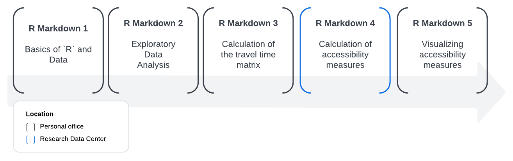

The CommuteCA R package was created to develop standardized methods for transport analysis in research, especially for studies using Statistics Canada surveys. Among the available surveys, we focused our efforts on the 2021 Census of Population, which contain valuable variables for transportation research. This package was created in conjunction with the office of the Research Data Center at McMaster University, the Sherman Centre for Digital Scholarship and the Mobilizing Justice.
The Mobilizing Justice project is a multidisciplinary and multi-sector collaboration with the objective of understand and address transportation poverty in Canada and to improve the well-being of Canadians at risk of transport poverty. The Social Sciences and Humanities Research Council (SSRHC) has provided funding for the project, which was created by an unprecedented alliance of academics from various Canadian provinces and institutions, transportation firms, and nonprofit organizations.
Structure
CommuteCA consists of five R markdown files, comprising all the steps required to obtain accessibility analyses for any region in Canada, using the 2021 Census of Population as the data source.
As the source data (the demographic census) is restricted and controlled access data, it needs to be manipulated within a Research Data Center (RDC) office. For this reason, we have created a methodology that splits the process to obtain and analyze accessibility metrics into five parts, with the objective of facilitating the data processing.
The figure below shows the order in which the R markdown files are executed. Only the fourth step, “Calculation of accessibility measures”, must be executed inside an RDC office if you want to work with the original data from the Census of Population. In order to make the methodology easier to understand, we have also provided a synthetic data set from the demographic census, with a selection of variables so the researcher can test and train the methodology before going to process the original data in an RDC office.

The R markdown files are available in the /data-raw folder.
Explanation of the R markdown files
Basics of R and Data
This R markdown provides a brief introduction to the R language and data concepts. It also talks about the principles of literate programming, data objects and basic operations, ways of measuring things and data manipulation.
Exploratory Data Analysis
This R markdown aims to provide a brief introduction to exploratory data analysis (EDA). It also deals with descriptive statistics and visualization techniques.
Travel Times
This R markdown calculates a travel time matrix for multimodal transport networks (walk, bike, public transport and car), for a selection of dissemination areas (DA), using the {r5r} R package.
Accessibility measures
Considering the number of workers and employment opportunities obtained from the 2021 Census of Population, this R markdown aims to create a methodology to obtain Hansen-type accessibility (Hansen, 1959) and spatial accessibility (Soukov and Paez, 2023), for all Canadian provinces and territories, considering different modes of travel.